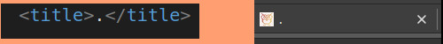
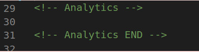
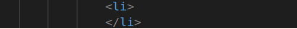

répétition: nom de recherche répétitive : source La répétition des mots clés était utilisé avant pour aidé les site à remonté dans la file de recherche, depuis cette technique est à proscrire puisque interdite, les moteurs de recherche risque tout simplement de black listé le site, il ne sera donc pas référencé
non adapté au site : source
Les mots clés comme google ou seo ne sont pas adaptés au site puisqu'en effet celui-ci est un site de web design , les moteurs de recherche comme google ont besoin de mots clés qui corresponde au site afin de le référencé
Mot clé pour paris La société se trouve à lyon, pour que google référence le site correctement et que l'utilisateur trouve le site à l'endroit ciblé il faut utilisé des mots clé en corrélation avec la ville
bonne pratique :Des mots clés plus approprié ainsi que des mots clés local permettra d'avoir un meilleur référencement et d'être mieux positionné dans la file de recherche. Une recherche de mots clés plus adapté avec Kwfinder et Google keyword planner qui permettra de voir la concurence en fonction des mots clés
Test fluidité du site
Test réalisé avec Gtmétrix
images Trop lourde :Les images sont trops lourdes de format "bmp" qui est un format non compressé, il ralenti le vitesse de chargement de la page
Amélioré les images : Avec un format plus adapté de type jpeg ou png on rendra la page moin lourde et donc on gagnera en fluidité
Mise en cache du navigateur
absence de cache, il impose le chargement de toutes les données à chaque fois qu'on visite le site
cache : La mise en cache permettrait le stockage de certaines informations comme par exemple les images qui peuvent demander plus de bande passante. La mise en cache permet de réutiliser efficacement des données précedemment récupérer ou traitées .
bonne pratique
Le site présente une mauvaise note car il met beaucoup trop de temps à charger du serveur .Il faut dans un premier temps réduire les images et mettre un cache pour qu'il n'est pas à charger toutes les données à chaque visite.
Titre dans le Head

Titre dans le head
le point dans la balise title ne constitue pas un descriptif,cela risque d'être un frein pour que google puisse positionner le site.
bonne pratiquesource
La balise "title" est se qui apparait en bleu dans le moteur de recheche , il est donc important en seo car il est pris en compte par google dans son positionnement des pages vis à vis des requête. On doit donc mettre un titre en cohérence avec le site .
Balise meta description
Absence de la description
Aucune description dans la balise meta description
bonne pratique Même si la balise n'a aucun impacte dans le seo, celle-ci doit etre quand même remplie car elle pourra incité l'utilisateur à cliqué sur la page et donc visité le site.
Langue dans le head
langue html en automatique
La langue dans html doit être définie
bonne pratique
La page html doit être définie, notre page est en français donc on doit la définir en "fr".
Google analytics

Absence du code
Le code de google analytics est absent
bonne pratique
Google analytics est un puissant outil pour analiser le trafic d'un site. Il permet parmis beaucoup de fonctionnalité d'étudié les visites, de voir quel page et plus performante, le nombre de visiteurs qui revient , voir le taux de rebond et repérer si il y a un problème .
Div keywords
Mots clé caché
Le div keyword utilise des mots clé caché.
bonne pratique
Les mots clés caché ont pour but de tromper les algorithmes des moteurs de recherche et ainsi quand on utilise cette technique on espère influencé le référencement mais google aujourd'hui arrive à repéré se stratagème et black listé le site. C'est une méthode à proscrire, il vaut mieux utilisé un référencement naturel.
Balise li

Elément "li" vide
Aucun élément Dans la balise "li"
Bonne pratique
Utiliser une balise vide n'as pas d'intérêt et prend de la place pour rien, on doit donc la suprimé.
textes en image
Texte en image
Le texte en image est une mauvaise pratique et il alourdi le site
bonne pratique
Pour une bonne pratique il vaut mieux écrire le texte et le structurer
renseignement des images
Les balises
Le balise alt sont renseignés avec des mots clés caché
Bonne pratique
la balise alt est une balise qui doit être renseigné de manière explicite et unique
balises sémantiques
Absence de balises sémantiques
On trouve trop de div et aucune balise sémantiques
Bonne pratique
Les balises sémantiques définissent le rôle du contenu qu'ils englobent, ils indiquent au moteur de recherche quelle partie est l'en-tête ,laquelle représente le footer et laquelle contient les éléments de navigations.Plutôt que d'utilisé uniquement des div et permettre aux robots de mieux comprendre les informations contenues dans la page on doit structurer la page avec des balises semantiques de type footer, section,article,nav etc...
Formulaire
formulaire non structurer
Le formulaire n'est pas structurer
balise label
La fin de la balise label n'est pas mis au bon endroit
Bonne pratique
Structurer le formulaire afin d'avoir un formulaire propre .La fin de la balise label doit se trouver à la fin de la balise input. Pour aller plus loin on pourrais rajouter une couleur quand l'utilisateur se trompe dans l'adresse mail.
 accueil
accueil